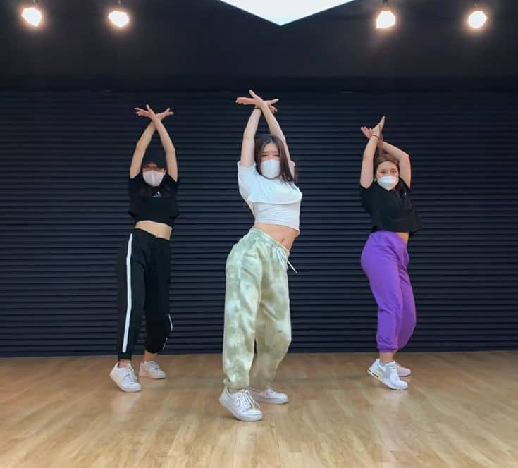
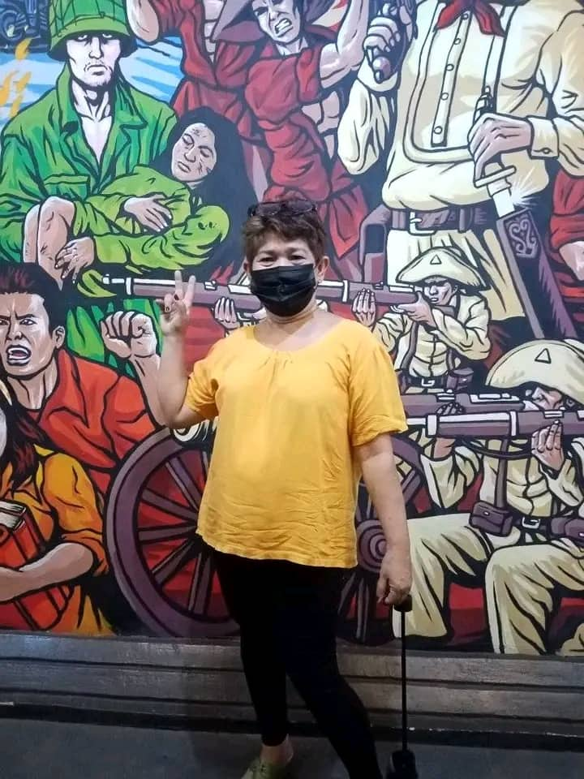
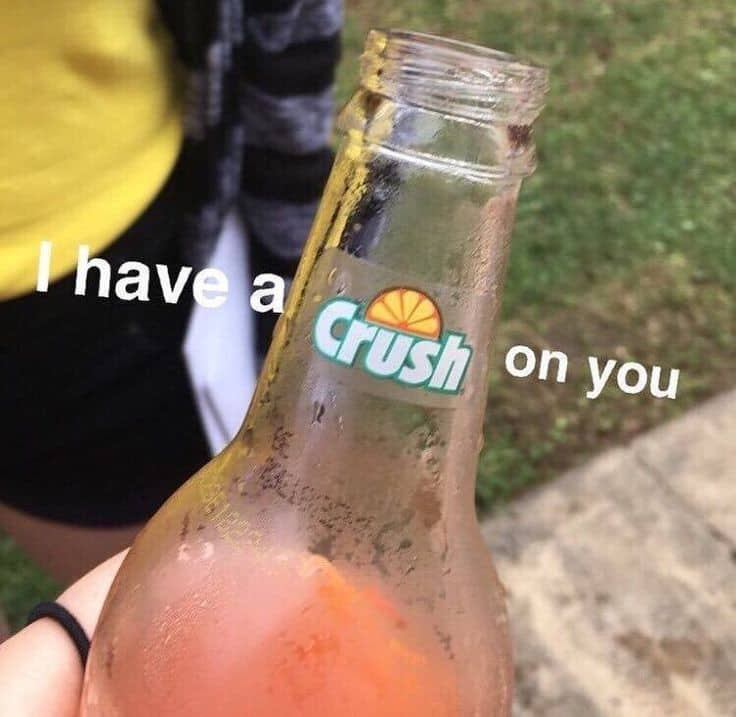

My Weaknesses



My three weaknesses are Dancing, My Mom and last is to Confess. to be honest i really hate dancing because i'm insecure about my body and my mama is my main weakness because i love her i can't even fight back on her, she always part of my dreams/goals and she's the main reason why i want to study hard and last is confession i'm really shy to confess my feelings with my crush because of rejection.